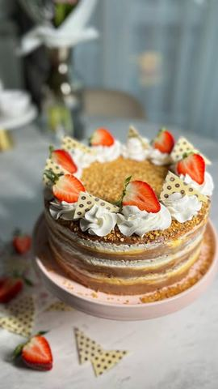

Moja beleška
SačuvanoSastojci
- Kora (prave se 4)
- Fil
- Dekoracija
Priprema
Koristila sam kalup od 24 cm, ali nećete pogrešiti ni sa kalupom od 26 cm. Za koru je potrebno penasto umutiti 3 belanca dodavajući 3 kašike šećera. Potom dodati 50 gr mlevenih pečenih lešnika i samo pola kašike brašna, pa lagano sjediniti spatulom. Kore peći na 200C nekih 15ak minuta. Postupak ponoviti 4 puta 😍 Za fil je potrebno svih 12 žumanca penasto umutiti sa šećerom. U posebnoj ciniji promešati pudinge sa brašnom i nekih 200 ml mleka. Sada sjediniti sve zajedno. U šerpu sipati ostatak od 1l mleka i prokuvati pa dodati fil od zumanaca. Mešajte sve vreme dok se fil lepo ne zgusne. Kada se ukuva, podelite ga na dva dela. U jedan deo dodajte mlečnu u drugi belu čokoladu, pa u oba po 125 gr putera. Mikserom umutiti. Posebno umutiti 300 ml slatke pavlake. Ređajte: kora - fil mlečna čokolada - fil bela čokolada - slatka pavlaka x 3, a preko poslednje kore premažite ostatak fila i pospite seckanim lešnikom. Ostavite je na par sati ili preko noći u frižideru. Torta se tooopi. Uživaćete!
Originalni opis sa Instagrama
Lenina rođendanska 🎂🤍 Slavljenica je imala želju da joj mama napravi baš ovu torticu 😍 Pečene lešnik korice, filovi od bele i mlečne čokolade, pa onda još hrskavog lešnika, maaa, milina… Sledi recept 😍 Kora (prave se 4): •3 belanca •3 kašike šećera •50 gr mlevenih pečenih lešnika •pola kašike brašna Fil: •12 žumanaca •150 gr šećera •3 pudinga od vanile •3 kašike šećera •20 gr brašna •1 l mleka •200 gr bele čokolade •200 gr mlečne čokolade •250 gr putera •300 gr slatke pavlake Dekoracija: •100 gr seckanih pečenih lešnika •malo šlaga •sveže jagode Koristila sam kalup od 24 cm, ali nećete pogrešiti ni sa kalupom od 26 cm. Za koru je potrebno penasto umutiti 3 belanca dodavajući 3 kašike šećera. Potom dodati 50 gr mlevenih pečenih lešnika i samo pola kašike brašna, pa lagano sjediniti spatulom. Kore peći na 200C nekih 15ak minuta. Postupak ponoviti 4 puta 😍 Za fil je potrebno svih 12 žumanca penasto umutiti sa šećerom. U posebnoj ciniji promešati pudinge sa brašnom i nekih 200 ml mleka. Sada sjediniti sve zajedno. U šerpu sipati ostatak od 1l mleka i prokuvati pa dodati fil od zumanaca. Mešajte sve vreme dok se fil lepo ne zgusne. Kada se ukuva, podelite ga na dva dela. U jedan deo dodajte mlečnu u drugi belu čokoladu, pa u oba po 125 gr putera. Mikserom umutiti. Posebno umutiti 300 ml slatke pavlake. Ređajte: kora - fil mlečna čokolada - fil bela čokolada - slatka pavlaka x 3, a preko poslednje kore premažite ostatak fila i pospite seckanim lešnikom. Ostavite je na par sati ili preko noći u frižideru. Torta se tooopi. Uživaćete! Prijatno 🌸🌸🌸 • • • #torta #rodjendanskatorta #slatkisi #slatkirecepti #ukusnahrana #domacetorte #lesnik #cokolada #zadovoljnahr #recepti